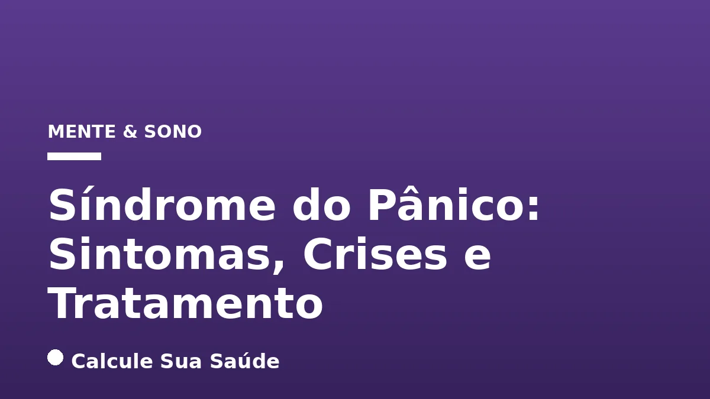

Aviso médico importante
Este conteúdo é educativo e informativo e não substitui a consulta, o diagnóstico ou o tratamento de um profissional de saúde. Em caso de sintomas, procure orientação médica.
Índice do Artigo
- 1. O Que é a Síndrome do Pânico e Como Ela Se Manifesta?
- 2. A Relação Entre Síndrome do Pânico e Agorafobia
- 3. Causas e Fatores de Risco para o Desenvolvimento da Síndrome do Pânico
- 4. Sintomas de um Ataque de Pânico: Físicos e Emocionais
- 5. Diferenciando um Ataque de Pânico de um Ataque Cardíaco
- 6. O Processo de Diagnóstico da Síndrome do Pânico
- 7. Comorbidades Frequentes Associadas à Síndrome do Pânico
- 8. Prevenção: Estratégias para Reduzir o Risco e a Intensidade das Crises
- 9. Tratamentos com Respaldo de Evidência para a Síndrome do Pânico
- 10. Medicação: Opções Farmacológicas e Seu Uso
- 11. O Papel do Estilo de Vida no Manejo da Síndrome do Pânico
- 12. Mitos Comuns vs. O Que a Ciência Diz sobre a Síndrome do Pânico
- 13. Impacto da Síndrome do Pânico na Qualidade de Vida
- 14. Dados Epidemiológicos da Síndrome do Pânico no Brasil
- 15. Quando Procurar Ajuda Profissional?
- 16. Perguntas frequentes
A Síndrome do Pânico, ou Transtorno do Pânico (TP), é uma condição psiquiátrica que afeta milhões de pessoas em todo o mundo, caracterizada por episódios súbitos e intensos de medo ou desconforto, conhecidos como ataques de pânico. Embora assustadores e frequentemente confundidos com emergências médicas graves, como um ataque cardíaco, esses episódios não são perigosos à vida. A compreensão aprofundada de seus mecanismos, sintomas e tratamentos é fundamental para o manejo eficaz e a melhoria da qualidade de vida dos indivíduos afetados.
No Brasil, a prevalência de transtornos de ansiedade é particularmente alta, e a Síndrome do Pânico contribui significativamente para esse cenário. Este artigo, baseado em evidências científicas e diretrizes clínicas, visa desmistificar o Transtorno do Pânico, fornecendo informações detalhadas sobre suas causas, fatores de risco, manifestações clínicas, processo diagnóstico e as abordagens terapêuticas mais eficazes disponíveis atualmente. Nosso objetivo é capacitar pacientes, familiares e profissionais de saúde com conhecimento preciso e atualizado.
É crucial ressaltar que as informações aqui apresentadas têm caráter educativo e não substituem a avaliação, o diagnóstico ou o tratamento médico profissional. Em caso de suspeita de Síndrome do Pânico ou qualquer outro transtorno de saúde mental, a busca por auxílio de um psiquiatra ou psicólogo qualificado é indispensável para um plano de cuidados individualizado e seguro.
Em resumo
- A Síndrome do Pânico é um transtorno de ansiedade caracterizado por ataques de pânico recorrentes e inesperados, com sintomas físicos e emocionais intensos.
- As causas são multifatoriais, incluindo predisposição genética, estresse, trauma e características de personalidade, sendo mais comum em mulheres.
- O diagnóstico é clínico, realizado por psiquiatras, e exige a exclusão de outras condições médicas com sintomas semelhantes.
- Os tratamentos mais eficazes incluem a Terapia Cognitivo-Comportamental (TCC) e a medicação (ISRSs e IRSNs), frequentemente em combinação.
- A agorafobia, medo de situações onde a fuga é difícil, pode ser uma comorbidade comum, limitando a vida do paciente.
- Embora não haja uma 'cura definitiva', a Síndrome do Pânico é altamente tratável, permitindo aos pacientes gerenciar os sintomas e ter uma vida plena.
1. O Que é a Síndrome do Pânico e Como Ela Se Manifesta?
A Síndrome do Pânico, formalmente conhecida como Transtorno do Pânico (TP), é uma condição psiquiátrica que se enquadra no espectro dos transtornos de ansiedade. Sua característica central são os ataques de pânico recorrentes e inesperados, que são episódios súbitos de medo ou desconforto intenso. Esses ataques atingem seu pico em poucos minutos, geralmente em até 10 minutos, e são acompanhados por uma série de sintomas físicos e emocionais severos que podem ser extremamente assustadores para o indivíduo.
É fundamental entender que, apesar da intensidade e do caráter alarmante dos sintomas, um ataque de pânico não é perigoso do ponto de vista médico e não representa risco de vida. A principal preocupação para quem sofre de TP não é o ataque em si, mas a preocupação persistente com a ocorrência de futuros ataques e/ou a modificação significativa do comportamento para evitá-los. Essa preocupação antecipatória e as mudanças comportamentais são o que realmente caracterizam o transtorno.
A base neurobiológica da Síndrome do Pânico envolve um desequilíbrio de neurotransmissores no cérebro, como a serotonina e a noradrenalina. As crises ocorrem quando o sistema de 'alerta' cerebral, localizado na região central do cérebro responsável pelo controle das emoções e liberação de adrenalina, é disparado sem que haja um perigo real iminente. Isso leva a uma resposta de 'luta ou fuga' desproporcional à situação.
2. A Relação Entre Síndrome do Pânico e Agorafobia
Um conceito-chave frequentemente associado à Síndrome do Pânico é a agorafobia, que pode se desenvolver como uma condição comórbida. A agorafobia é o medo ou a ansiedade intensa de estar em locais ou situações onde a fuga pode ser difícil ou onde a ajuda pode não estar disponível caso ocorra um ataque de pânico. Isso pode incluir espaços abertos, transportes públicos, multidões, filas ou até mesmo estar sozinho fora de casa.
Muitas pessoas com Síndrome do Pânico começam a evitar situações que associam aos ataques, o que pode levar ao desenvolvimento da agorafobia. Essa evitação pode se tornar tão severa que o indivíduo se torna recluso, limitando drasticamente sua vida social, profissional e pessoal. A agorafobia, quando presente, agrava significativamente o impacto do Transtorno do Pânico na qualidade de vida.
3. Causas e Fatores de Risco para o Desenvolvimento da Síndrome do Pânico
As causas exatas da Síndrome do Pânico não são totalmente claras, mas sabe-se que diversos fatores interagem para seu desenvolvimento. A compreensão desses fatores é crucial para a prevenção e o manejo da condição.
Predisposição Genética e Hereditariedade
Há uma clara predisposição genética para a Síndrome do Pânico. Parentes de primeiro grau de indivíduos com TP apresentam um risco de cerca de 40% de desenvolver a síndrome. A hereditariedade em familiares de primeiro grau é em torno de 11%, e entre gêmeos monozigóticos (idênticos), a concordância pode variar de 30% a 40%. Isso sugere que, embora não seja uma condição puramente genética, a herança familiar desempenha um papel significativo.
Estresse e Experiências Traumáticas
Situações extremas de estresse e experiências traumáticas, tanto na infância quanto na vida adulta, podem atuar como gatilhos ou contribuir para o desenvolvimento da síndrome. Eventos como perdas significativas, acidentes, abusos ou períodos prolongados de alta pressão podem desregular os sistemas de resposta ao estresse do cérebro, tornando o indivíduo mais vulnerável a ataques de pânico.
Características de Personalidade
Certas características de personalidade podem aumentar a propensão à Síndrome do Pânico. Pessoas com mente ágil, perfeccionistas e com tendência a assumir responsabilidades além de seus limites podem ser mais suscetíveis. A sensibilidade à ansiedade, que se manifesta como o medo e a preocupação com interpretações distorcidas de reações corporais normais, também é um fator de risco importante. Indivíduos que interpretam uma palpitação como um ataque cardíaco iminente, por exemplo, podem ter um risco maior.
Fatores Demográficos e Comorbidades
Mulheres são de duas a três vezes mais propensas a receber o diagnóstico de Síndrome do Pânico do que homens. A síndrome geralmente se manifesta no final da adolescência ou no início da idade adulta, com grande parte dos casos ocorrendo entre 20 e 40 anos. Além disso, a Síndrome do Pânico frequentemente coexiste com outros transtornos, como depressão, outros transtornos de ansiedade (fobia social, transtorno de ansiedade generalizada, TOC, TEPT), transtorno bipolar e diversas condições médicas, incluindo doenças cardiovasculares, respiratórias (asma, DPOC), síndrome do intestino irritável, hipertensão, prolapso da válvula mitral e problemas de tireoide. O abuso de álcool e outras substâncias também é comum e pode complicar o quadro.
4. Sintomas de um Ataque de Pânico: Físicos e Emocionais
Os ataques de pânico são caracterizados por uma combinação abrupta e intensa de sintomas físicos e emocionais que atingem seu pico em poucos minutos. A experiência é frequentemente descrita como avassaladora e aterrorizante. É importante reconhecer esses sintomas para diferenciar um ataque de pânico de outras condições.
Sintomas Físicos
- Palpitações, ritmo cardíaco acelerado (taquicardia): Sensação de que o coração está batendo muito forte ou muito rápido.
- Sudorese: Transpiração excessiva, muitas vezes acompanhada de calafrios ou ondas de calor.
- Tremores ou abalos: Incontroláveis, podem afetar todo o corpo.
- Sensação de falta de ar, sufocamento ou asfixia: Dificuldade em respirar, sensação de que não há ar suficiente.
- Dor ou desconforto no peito: Pode ser aguda e intensa, levando à confusão com um ataque cardíaco.
- Náuseas, desconforto abdominal ou cólicas: Sintomas gastrointestinais comuns durante a crise.
- Tontura, instabilidade, vertigem ou sensação de desmaio: Sensação de perda de equilíbrio ou de que vai desmaiar.
- Sensações de dormência ou formigamento (parestesias): Geralmente nas extremidades, como mãos e pés.
- Calafrios ou ondas de calor: Mudanças bruscas na temperatura corporal percebida.
- Dor de cabeça: Pode variar de leve a intensa.
Sintomas Emocionais e Cognitivos
- Medo súbito e intenso: Sensação de perigo ou desgraça iminente sem uma causa aparente.
- Medo de perder o controle: Preocupação de que se está enlouquecendo ou agindo de forma irracional.
- Medo de morrer: Uma das sensações mais aterrorizantes, dada a intensidade dos sintomas físicos.
- Sensação de irrealidade (desrealização): O ambiente parece estranho, distante ou irreal.
- Sensação de estar separado de si mesmo (despersonalização): Sentimento de estar observando a si mesmo de fora, como se não fosse real.
Após a crise, a pessoa pode sentir-se fatigada e exausta, como se tivesse passado por um grande esforço físico ou emocional. A duração e a intensidade dos sintomas podem variar entre os indivíduos e entre os ataques.
5. Diferenciando um Ataque de Pânico de um Ataque Cardíaco
Um dos maiores medos durante um ataque de pânico é a crença de que se está sofrendo um ataque cardíaco. Embora os sintomas possam ser assustadoramente semelhantes, existem diferenças cruciais que a ciência aponta. É vital buscar atendimento médico em caso de dúvida, mas entender as distinções pode ajudar a reduzir o medo.
| Característica | Ataque de Pânico | Ataque Cardíaco |
|---|---|---|
| Início | Súbito, geralmente em resposta a estresse ou inesperado. | Pode ser súbito ou gradual, muitas vezes após esforço físico. |
| Pico dos Sintomas | Em poucos minutos (geralmente 10 minutos). | Pode piorar progressivamente ao longo do tempo. |
| Dor no Peito | Geralmente aguda, pontiaguda, pode ser acompanhada de sensibilidade. Melhora em minutos. | Geralmente descrita como pressão, aperto, peso ou queimação. Pode irradiar para braço, pescoço, mandíbula, costas. Não melhora rapidamente. |
| Falta de Ar | Sensação de sufocamento, hiperventilação. | Dificuldade em respirar, sensação de peso no peito. |
| Medo Dominante | Medo de morrer, enlouquecer, perder o controle. | Medo da morte iminente, mas focado na dor física. |
| Duração | Geralmente de 5 a 20 minutos. | Pode durar mais de 20 minutos e não ceder com repouso. |
| Fatores de Risco | Histórico de ansiedade, estresse, trauma. | Doença cardíaca preexistente, hipertensão, diabetes, tabagismo, colesterol alto. |
Em caso de dor no peito ou outros sintomas preocupantes, a busca por atendimento médico de emergência é sempre a melhor conduta para descartar condições cardíacas graves. Somente um profissional de saúde pode realizar o diagnóstico correto.
6. O Processo de Diagnóstico da Síndrome do Pânico
O diagnóstico da Síndrome do Pânico é uma etapa crucial para o início do tratamento e é realizado por um profissional de saúde qualificado, geralmente um psiquiatra. Devido à intensidade dos sintomas físicos, é comum que os pacientes procurem primeiramente prontos-socorros, cardiologistas ou clínicos gerais, acreditando estarem sofrendo de uma condição médica grave.
Descartando Condições Médicas
O primeiro passo no processo diagnóstico é descartar outras condições médicas que possam mimetizar os sintomas de um ataque de pânico. Isso pode incluir:
- Exame físico completo: Para avaliar a saúde geral e identificar possíveis causas físicas.
- Exames de sangue: Para verificar a função da tireoide (problemas de tireoide podem causar sintomas semelhantes à ansiedade), níveis de eletrólitos e outras possíveis condições metabólicas.
- Eletrocardiograma (ECG ou EKG): Para avaliar a saúde cardíaca e descartar problemas como arritmias ou isquemia.
- Outros exames: Dependendo dos sintomas, exames para descartar embolia pulmonar, tumores adrenais (como feocromocitoma) ou outras condições respiratórias.
Critérios Diagnósticos do DSM-5-TR
Após a exclusão de causas médicas, o diagnóstico de Transtorno do Pânico baseia-se em critérios clínicos estabelecidos pelo Manual Diagnóstico e Estatístico de Transtornos Mentais (DSM-5-TR). Para o diagnóstico, o indivíduo deve apresentar:
- Ataques de pânico recorrentes e inesperados.
- Pelo menos um dos ataques deve ter sido seguido por um mês ou mais de preocupação contínua com a ocorrência de novos ataques, medo das consequências (perder o controle, ter um ataque cardíaco, 'enlouquecer') ou mudanças significativas no comportamento para evitar situações que possam desencadear um ataque.
- Os ataques de pânico não devem ser atribuídos aos efeitos fisiológicos de uma substância (drogas, medicamentos) ou a outra condição médica ou transtorno mental (como fobia social ou transtorno obsessivo-compulsivo).
Avaliação Psicológica Detalhada
A avaliação psicológica é uma parte essencial do diagnóstico. O profissional de saúde discutirá com o paciente sobre a natureza dos sintomas, medos, situações estressantes, problemas de relacionamento, situações evitadas e histórico familiar de transtornos de ansiedade ou outras condições de saúde mental. Questionários de autoavaliação psicológica também podem ser utilizados para complementar a avaliação e quantificar a intensidade dos sintomas.
7. Comorbidades Frequentes Associadas à Síndrome do Pânico
A Síndrome do Pânico raramente ocorre isoladamente. É comum que ela coexista com outros transtornos psiquiátricos e condições médicas, o que pode complicar o diagnóstico e o tratamento. Reconhecer essas comorbidades é fundamental para um plano de cuidados abrangente.
Transtornos Psiquiátricos Comuns
- Depressão: Muitos indivíduos com Síndrome do Pânico também desenvolvem depressão, seja como consequência do impacto da ansiedade na vida diária ou devido a mecanismos neurobiológicos compartilhados.
- Outros Transtornos de Ansiedade: É frequente a coexistência com Transtorno de Ansiedade Generalizada (TAG), Fobia Social, Transtorno Obsessivo-Compulsivo (TOC) e Transtorno de Estresse Pós-Traumático (TEPT). A agorafobia, como já mencionado, é uma comorbidade particularmente comum.
- Transtorno Bipolar: Em alguns casos, a Síndrome do Pânico pode estar presente em indivíduos com transtorno bipolar, adicionando complexidade ao manejo.
- Abuso de Substâncias: O consumo de álcool e outras drogas é uma comorbidade preocupante. Muitos pacientes tentam a automedicação para aliviar a ansiedade, mas isso pode piorar o quadro e levar à dependência.
Condições Médicas Associadas
Além dos transtornos psiquiátricos, a Síndrome do Pânico pode estar ligada a diversas condições médicas. Isso não significa que uma causa a outra, mas que há uma associação que pode influenciar tanto a manifestação dos sintomas quanto a resposta ao tratamento.
- Doenças Cardiovasculares: Prolapso da válvula mitral e hipertensão são exemplos de condições cardíacas que podem estar associadas.
- Doenças Respiratórias: Asma e Doença Pulmonar Obstrutiva Crônica (DPOC) podem ter sintomas que se sobrepõem aos ataques de pânico, como a falta de ar, e vice-versa.
- Problemas de Tireoide: O hipertireoidismo, por exemplo, pode causar sintomas como taquicardia, tremores e ansiedade, que podem ser confundidos com ataques de pânico.
- Síndrome do Intestino Irritável: Problemas gastrointestinais são frequentemente observados em pessoas com transtornos de ansiedade.
A identificação e o tratamento adequado de todas as comorbidades são essenciais para um resultado terapêutico favorável na Síndrome do Pânico.
8. Prevenção: Estratégias para Reduzir o Risco e a Intensidade das Crises
Embora não haja uma prevenção específica que garanta a não ocorrência da Síndrome do Pânico, especialmente em indivíduos com forte predisposição genética, algumas medidas podem ajudar a reduzir o risco de desenvolvimento ou a intensidade e frequência das crises, particularmente em pessoas com tendência à ansiedade. Adotar um estilo de vida saudável e buscar ajuda precoce são pilares importantes.
Estilo de Vida Saudável
- Exercícios Físicos Regulares: A prática regular de atividade física é um poderoso ansiolítico natural. Ajuda a regular neurotransmissores, reduzir o estresse e melhorar o bem-estar geral.
- Dieta Equilibrada: Uma alimentação rica em nutrientes, com frutas, vegetais, grãos integrais e proteínas magras, contribui para a saúde cerebral e o equilíbrio do humor. Evitar excesso de cafeína e açúcares refinados pode ser benéfico.
- Rotina de Sono Consistente: A privação de sono ou um padrão de sono irregular pode exacerbar a ansiedade e aumentar a vulnerabilidade a ataques de pânico. Priorizar uma boa higiene do sono é fundamental. Para mais informações sobre a importância do sono, confira nosso artigo sobre Insônia: Causas, Tipos e Tratamento Sem Remédios.
Gerenciamento do Estresse e Autocuidado
- Técnicas de Relaxamento: Práticas como ioga, meditação mindfulness, exercícios de respiração profunda e outras técnicas de relaxamento podem ajudar a acalmar o sistema nervoso e reduzir a resposta ao estresse.
- Pensamento Positivo e Autocontrole: Desenvolver estratégias para reestruturar pensamentos negativos e catastróficos, além de aprender a identificar e gerenciar gatilhos de estresse, é crucial.
- Conexão Social: Manter contato com familiares e amigos, seja presencialmente ou virtualmente, oferece suporte emocional e reduz sentimentos de isolamento, que podem agravar a ansiedade.
Evitar Automedicação e Buscar Ajuda Precoce
É fundamental não recorrer ao consumo de álcool, drogas ilícitas ou automedicação para tentar aliviar os sintomas. Essas substâncias podem oferecer um alívio temporário, mas a longo prazo pioram o quadro da Síndrome do Pânico e podem levar a dependência e outros problemas de saúde. Ao perceber crises de ansiedade recorrentes que interferem nas atividades diárias, procurar ajuda especializada (psiquiatra e/ou psicólogo) é a melhor estratégia. O tratamento precoce pode prevenir o agravamento da síndrome e o desenvolvimento de fobias, como a agorafobia.
9. Tratamentos com Respaldo de Evidência para a Síndrome do Pânico
A boa notícia é que a Síndrome do Pânico é altamente tratável. As abordagens terapêuticas mais eficazes são a psicoterapia e a medicação, frequentemente utilizadas em combinação para otimizar os resultados. O objetivo é reduzir a intensidade e a frequência dos ataques, permitindo que o paciente retome o controle de sua vida e melhore sua qualidade de vida.
Psicoterapia: A Terapia Cognitivo-Comportamental (TCC)
A Terapia Cognitivo-Comportamental (TCC) é considerada um tratamento de primeira escolha e é fortemente recomendada como abordagem de primeira linha para a Síndrome do Pânico. A TCC é uma forma de terapia focada que ajuda o paciente a:
- Compreender os ataques de pânico: O terapeuta ajuda o paciente a entender os mecanismos por trás dos ataques, desmistificando as sensações físicas e cognitivas.
- Identificar e modificar padrões de pensamento: A TCC trabalha na identificação de pensamentos catastróficos e interpretações distorcidas das sensações corporais, ensinando o paciente a reavaliá-los de forma mais realista.
- Desenvolver estratégias de enfrentamento: Através de técnicas como a exposição gradual e segura aos sintomas de pânico (exposição interoceptiva), o paciente aprende que as sensações físicas não são perigosas. Isso ajuda a quebrar o ciclo de medo e evitação, contribuindo para a resolução dos ataques.
A TCC é eficaz tanto a curto quanto a longo prazo, ensinando habilidades que os pacientes podem usar para gerenciar a ansiedade e prevenir recaídas.
10. Medicação: Opções Farmacológicas e Seu Uso
A medicação é outra ferramenta poderosa no tratamento da Síndrome do Pânico, especialmente quando os sintomas são graves ou a psicoterapia isolada não é suficiente. A escolha da medicação deve ser feita por um psiquiatra, considerando o perfil do paciente e as possíveis comorbidades.
Antidepressivos
Os antidepressivos são as medicações de primeira linha para o tratamento da Síndrome do Pânico, mesmo na ausência de depressão. Eles atuam regulando os neurotransmissores cerebrais envolvidos na ansiedade. Os principais grupos utilizados são:
- Inibidores Seletivos da Recaptação de Serotonina (ISRSs): São amplamente prescritos devido à sua eficácia e perfil de efeitos colaterais geralmente mais tolerável. ISRSs aprovados pela FDA para o tratamento do TP incluem fluoxetina, paroxetina e sertralina.
- Inibidores da Recaptação de Serotonina e Noradrenalina (IRSNs): Outra classe eficaz que atua em dois neurotransmissores.
O efeito terapêutico dos antidepressivos geralmente não é imediato, podendo levar algumas semanas para ser percebido. O tratamento costuma ser mantido por um período prolongado para consolidar a melhora e prevenir recaídas.
Ansiolíticos (Benzodiazepínicos)
Os benzodiazepínicos são ansiolíticos que podem ser prescritos por psiquiatras, especialmente no início do tratamento, por um curto período. Eles agem rapidamente para aliviar os sintomas agudos de ansiedade e pânico, auxiliando na adesão ao tratamento enquanto os antidepressivos começam a fazer efeito. Exemplos incluem alprazolam e lorazepam.
No entanto, o uso a longo prazo de benzodiazepínicos está associado a efeitos adversos, como sedação, problemas cognitivos e psicomotores, e risco de dependência. Por isso, seu uso é geralmente limitado a períodos curtos e sob estrita supervisão médica.
É importante lembrar que o tratamento pode levar tempo e esforço, mas a redução dos sintomas pode ser observada em algumas semanas, com melhora significativa em vários meses. Visitas de manutenção ocasionais podem ser necessárias para garantir o controle dos ataques. Embora não haja uma 'cura definitiva', o tratamento permite que os pacientes aprendam a lidar com os sentimentos e melhorem sua qualidade de vida.
11. O Papel do Estilo de Vida no Manejo da Síndrome do Pânico
Além da psicoterapia e da medicação, a adoção de um estilo de vida saudável desempenha um papel complementar crucial no manejo da Síndrome do Pânico. Essas estratégias podem potencializar os efeitos do tratamento e promover o bem-estar geral.
Alimentação e Nutrição
Uma dieta equilibrada, rica em nutrientes, pode influenciar positivamente a saúde mental. Evitar o consumo excessivo de cafeína, que é um estimulante e pode exacerbar a ansiedade, é uma recomendação comum. O mesmo vale para o açúcar refinado e alimentos ultraprocessados, que podem levar a picos e quedas de energia, impactando o humor. Para mais informações sobre o impacto da alimentação, consulte nosso artigo sobre Alimentos Ultraprocessados: Riscos e Identificação.
Atividade Física
A prática regular de exercícios físicos, como caminhada, corrida, natação ou ioga, é um poderoso aliado. A atividade física libera endorfinas, que têm efeitos ansiolíticos e melhoram o humor. Além disso, ajuda a regular o sono e a reduzir os níveis de cortisol, o hormônio do estresse.
Qualidade do Sono
Um sono reparador é essencial para a regulação do humor e da ansiedade. Estabelecer uma rotina de sono consistente, criar um ambiente propício para dormir e evitar telas antes de deitar podem melhorar significativamente a qualidade do descanso.
Técnicas de Relaxamento e Mindfulness
Incorporar técnicas de relaxamento, como a respiração diafragmática, meditação e mindfulness, na rotina diária pode ajudar a gerenciar a ansiedade e a prevenir ataques de pânico. Essas práticas ensinam a focar no presente, reduzindo a ruminação sobre medos futuros.
12. Mitos Comuns vs. O Que a Ciência Diz sobre a Síndrome do Pânico
Existem muitos equívocos sobre a Síndrome do Pânico que podem dificultar a busca por ajuda e o processo de tratamento. É importante desmistificar essas ideias com base em evidências científicas.
Mito: Um ataque de pânico é um ataque cardíaco ou pode ser fatal.
Ciência: Embora os sintomas físicos de um ataque de pânico (como dor no peito, palpitações e falta de ar) sejam muito semelhantes aos de um ataque cardíaco, eles não são medicamente perigosos e não representam risco de vida. A dor no peito de um ataque de pânico tende a ser aguda e melhorar em minutos, enquanto a de um ataque cardíaco é mais uma pressão que piora e pode irradiar.
Mito: A Síndrome do Pânico não tem cura e a pessoa terá que conviver com ela para sempre.
Ciência: Embora não haja uma 'cura definitiva' no sentido de erradicar completamente a predisposição, a Síndrome do Pânico é altamente tratável. Com psicoterapia (especialmente TCC) e/ou medicação, os sintomas podem ser significativamente reduzidos ou eliminados, e os pacientes podem aprender a gerenciar a condição e ter uma vida plena.
Mito: Beber álcool ou usar drogas ajuda a acalmar as crises de pânico.
Ciência: A automedicação com álcool ou outras drogas pode causar diversos problemas de saúde e, na verdade, piorar o quadro da Síndrome do Pânico e de outros transtornos de ansiedade. Essas substâncias podem levar à dependência e criar um ciclo vicioso de ansiedade e uso de substâncias.
13. Impacto da Síndrome do Pânico na Qualidade de Vida
A Síndrome do Pânico pode ter um impacto profundo e debilitante na qualidade de vida dos indivíduos. O medo constante de ter um novo ataque e a evitação de situações que possam desencadeá-los levam a restrições significativas na vida pessoal, social e profissional.
Restrições Sociais e Profissionais
Muitos pacientes com Síndrome do Pânico desenvolvem agorafobia, o que os leva a evitar sair de casa, usar transporte público, ir a locais lotados ou até mesmo trabalhar. Isso pode resultar em isolamento social, perda de emprego e dificuldades financeiras. A qualidade dos relacionamentos também pode ser afetada, pois amigos e familiares podem ter dificuldade em compreender a intensidade do sofrimento.
Sofrimento Psicológico e Emocional
O medo constante, a ansiedade antecipatória e a sensação de perda de controle geram um sofrimento psicológico imenso. A autoestima pode ser abalada, e sentimentos de desesperança e frustração são comuns. A presença de comorbidades como a depressão agrava ainda mais esse quadro, tornando a vida diária um desafio.
Busca por Ajuda e Estigma
O estigma associado aos transtornos mentais pode dificultar a busca por ajuda. Muitos pacientes demoram a procurar tratamento devido à vergonha ou ao medo de serem julgados. No entanto, é fundamental quebrar esse ciclo e entender que a Síndrome do Pânico é uma condição médica legítima que requer tratamento, assim como qualquer outra doença física.
14. Dados Epidemiológicos da Síndrome do Pânico no Brasil
A prevalência da Síndrome do Pânico e de outros transtornos de ansiedade no Brasil é um dado alarmante que ressalta a importância da conscientização e do acesso a tratamento adequado.
- A Organização Mundial da Saúde (OMS) estima que a Síndrome do Pânico afete de 2% a 4% da população brasileira.
- Dados mais antigos (2008) estimavam que entre 4 e 6 milhões de brasileiros sofriam de Síndrome do Pânico.
- Em relação aos transtornos de ansiedade em geral, o Brasil é líder mundial em prevalência, com mais de 26% dos brasileiros recebendo diagnóstico médico de ansiedade, segundo uma pesquisa de 2017 da OMS e dados de 2023. Aproximadamente 18,6 milhões de brasileiros possuem transtorno de ansiedade. Para uma visão mais ampla, consulte nosso artigo sobre Ansiedade: Sintomas e Quando Procurar Ajuda.
- A prevalência de ansiedade e depressão globalmente aumentou em 25% no primeiro ano da pandemia de COVID-19, impulsionada pelo estresse do isolamento social, medo de infecção e perdas.
- Mulheres têm duas a três vezes mais propensão a desenvolver Síndrome do Pânico do que homens.
Esses números sublinham a necessidade de políticas públicas de saúde mental robustas, maior acesso a profissionais qualificados e campanhas de conscientização para combater o estigma e incentivar a busca por tratamento.
15. Quando Procurar Ajuda Profissional?
Reconhecer os sinais e saber quando procurar ajuda profissional é o primeiro e mais importante passo para o tratamento da Síndrome do Pânico. Não hesite em buscar apoio se você ou alguém que você conhece apresentar os seguintes sintomas:
- Ataques de pânico recorrentes e inesperados.
- Preocupação constante com a ocorrência de novos ataques.
- Medo das consequências dos ataques (perder o controle, enlouquecer, morrer).
- Mudanças significativas no comportamento para evitar situações que possam desencadear ataques.
- Sintomas de ansiedade que interferem nas atividades diárias, no trabalho, nos estudos ou nos relacionamentos.
- Sensação de que o medo está controlando sua vida.
- Uso de álcool ou drogas para tentar aliviar a ansiedade.
Um psiquiatra pode diagnosticar a condição e prescrever a medicação adequada, se necessário. Um psicólogo, especialmente um com experiência em Terapia Cognitivo-Comportamental (TCC), pode ensinar estratégias eficazes para lidar com os ataques e a ansiedade. A combinação de ambos os tratamentos é frequentemente a mais eficaz.
Lembre-se: a Síndrome do Pânico é uma condição de saúde mental séria, mas tratável. Buscar ajuda é um sinal de força e o caminho para recuperar o controle e a qualidade de vida.
16. Perguntas frequentes
O que desencadeia uma crise de pânico?
Crises de pânico podem ser desencadeadas por estresse, situações traumáticas, uso de substâncias, ou mesmo ocorrer de forma inesperada sem um gatilho aparente. Fatores genéticos e desequilíbrios de neurotransmissores também contribuem para a vulnerabilidade.
A Síndrome do Pânico tem cura definitiva?
Embora não haja uma 'cura definitiva' no sentido de erradicar completamente a predisposição, a Síndrome do Pânico é altamente tratável. Com psicoterapia (especialmente TCC) e/ou medicação, os sintomas podem ser significativamente reduzidos ou eliminados, permitindo uma vida plena.
Quais são os principais sintomas de um ataque de pânico?
Os principais sintomas incluem palpitações, sudorese, tremores, falta de ar, dor no peito, náuseas, tontura, dormência, calafrios ou ondas de calor, acompanhados de medo intenso de perder o controle, enlouquecer ou morrer.
A Síndrome do Pânico pode ser confundida com outras doenças?
Sim, os sintomas físicos intensos de um ataque de pânico, como dor no peito e palpitações, são frequentemente confundidos com um ataque cardíaco. Por isso, é comum que pacientes procurem emergências médicas antes de receberem o diagnóstico correto.
Qual o tratamento mais eficaz para a Síndrome do Pânico?
A Terapia Cognitivo-Comportamental (TCC) é considerada um tratamento de primeira linha. A medicação, como os Inibidores Seletivos da Recaptação de Serotonina (ISRSs), também é altamente eficaz. Frequentemente, a combinação de TCC e medicação oferece os melhores resultados.
O que é agorafobia e como ela se relaciona com a Síndrome do Pânico?
Agorafobia é o medo intenso de estar em locais ou situações onde a fuga pode ser difícil ou a ajuda não estar disponível em caso de um ataque de pânico. Ela pode se desenvolver como uma comorbidade da Síndrome do Pânico, levando à evitação de diversas situações e ao isolamento.
É seguro usar álcool para acalmar a ansiedade das crises?
Não, a automedicação com álcool ou outras substâncias é contraindicada. Embora possa haver um alívio temporário, a longo prazo, isso pode piorar a Síndrome do Pânico e levar a problemas de dependência, complicando ainda mais o quadro.
Quanto tempo dura o tratamento para a Síndrome do Pânico?
A duração do tratamento varia para cada indivíduo. A melhora dos sintomas pode ser percebida em algumas semanas, mas o tratamento completo, incluindo psicoterapia e medicação, pode durar vários meses ou até anos para consolidar os resultados e prevenir recaídas.
Leia também
Referências e Fontes
1. Instituto Lado a Lado pela Vida. Síndrome do Pânico. Disponível em: ladoaladopelavida.org.br
2. Mayo Clinic. Panic disorder - Mayo Clinic Health Information. Disponível em: monument.health
3. Mayo Clinic. Panic attacks and panic disorder - Symptoms and causes. Disponível em: vertexaisearch.cloud.google.com
4. NIH - National Center for Biotechnology Information (NCBI). Panic Disorder - StatPearls. Disponível em: ncbi.nlm.nih.gov
5. Conselho Federal de Medicina (CFM). Síndrome do Pânico | Portal Médico. Disponível em: portal.cfm.org.br
6. MSD Manuals. Ataques de Pânico e Síndrome do Pânico. Disponível em: msdmanuals.com
7. NIH - National Institute of Mental Health (NIMH). Panic Disorder: When Fear Overwhelms. Disponível em: nimh.nih.gov